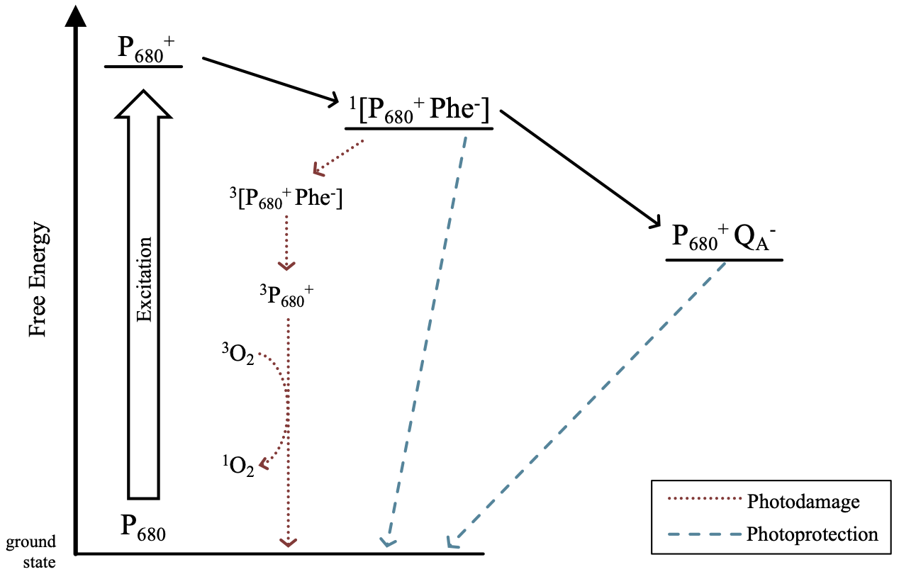
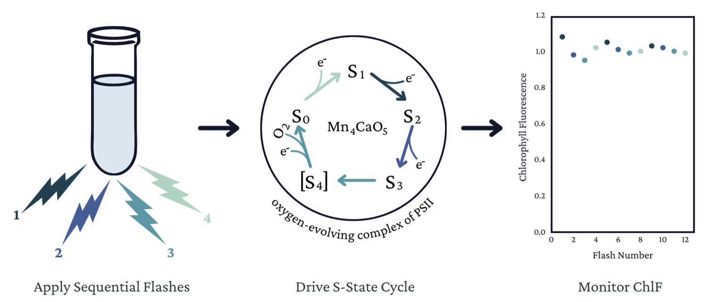

Latitude & Light
Photosynthetic Adaptations of Polar Phytoplankton to Extreme Light Limitation
Natasha M. Ryan
Douglas A. Campbell
Mount Allison University Biology Department
Introduction
Polar phytoplankton are vital to global aquatic ecosystems1,2
As photolithotrophs, phytoplankton rely on photons for energy input, restricting their growth to the photic zone, defined as the region where sufficient light for photosynthesis penetrates, typically extending down to 1% of surface irradiance3,4
Despite severe light constraints in polar regions, certain psychrophile phytoplankton exhibit remarkable adaptability through slow but significant growth under the ice during winter indicating possible photosynthetic adaptations to light limitation5–7
We hypothesized that maintaining photosynthesis under extremely low light involves suppressing energetically wasteful charge recombinations in Photosystem II

Figure 1: Recombination Pathways of PSII note: this figure will be simplified into a view of electron transport pathways in the thylakoid membrane with recombination pathways highlighted before the final presentation
Methods
Single turnover variable chlorophyll fluorescence can be used to evaluate recombination8,9
Recombination reactions cause individual PSIIs to lose charge separation and slip back in the four-step cycle of oxygen evolution, desynchronizing the S-state cycle across the population10

Figure 2: Single-turnover variable chlorophyll fluorescence approach for monitoring S-state cycling of phytoplankton photosynthesis
Conducting a comparative analysis of S-state cycling of polar and temperate diatoms and green algae under a range of light and temperature conditions, we can determine if polar taxa have evolved to increase photosynthetic energy conversion efficiency by minimizing inefficient recombination reactions
Results

Figure 3: Duration of significant S-State cycling of PSII in polar and temperate diatoms and green algae under a range of light and temperature conditions
We observe 3 key patterns between and within taxa
- Within taxa, higher frequencies of photon delivery and colder temperatures result in less recombination and, therefore, less energy waste
- Polar taxa exhibit significant s-state cycling across a broader range of conditions than their temperate counterparts
- Polar taxa maintain synchronicity in S-state cycling for longer durations than temperate taxa under comparable conditions
Conclusions
Together, our findings indicate that diverse polar phytoplankton have evolved capacities to sustain efficient photosynthesis under extreme low light
This research challenges the conventional understanding of the limits on photosynthesis under light limitation, helping unravel polar ecosystem dynamics and predict ecosystem responses to climate change
References
1.
Pierella Karlusich, J. J., Ibarbalz, F. M. & Bowler, C. Phytoplankton in the Tara Ocean. Annual Review of Marine Science 12, 233–265 (2020).
2.
Ardyna, M. & Arrigo, K. R. Phytoplankton dynamics in a changing Arctic Ocean. Nature Climate Change 10, 892–903 (2020).
3.
Raven, J. A., Kübler, J. E. & Beardall, J. Put out the light, and then put out the light. Journal of the Marine Biological Association of the United Kingdom 80, 1–25 (2000).
4.
Kirk, J. T. O. Light and Photosynthesis in Aquatic Ecosystems. (Cambridge University Press, 2011).
5.
Randelhoff, A. et al. Arctic mid-winter phytoplankton growth revealed by autonomous profilers. Science Advances 6, eabc2678 (2020).
6.
Hancke, K. et al. Extreme Low Light Requirement for Algae Growth Underneath Sea Ice: A Case Study From Station Nord, NE Greenland. Journal of Geophysical Research: Oceans 123, 985–1000 (2018).
7.
Leu, E. et al. Arctic spring awakening – Steering principles behind the phenology of vernal ice algal blooms. Progress in Oceanography 139, 151–170 (2015).
8.
Schuback, N. et al. Single-Turnover Variable Chlorophyll Fluorescence as a Tool for Assessing Phytoplankton Photosynthesis and Primary Productivity: Opportunities, Caveats and Recommendations. Frontiers in Marine Science 8, (2021).
9.
Zaharieva, I. & Dau, H. Energetics and Kinetics of S-State Transitions Monitored by Delayed Chlorophyll Fluorescence. Frontiers in Plant Science 10, (2019).
10.
Gates, C., Ananyev, G. & Dismukes, G. C. Realtime kinetics of the light driven steps of photosynthetic water oxidation in living organisms by ‘stroboscopic’ fluorometry. Biochimica et Biophysica Acta (BBA) - Bioenergetics 1861, 148212 (2020).